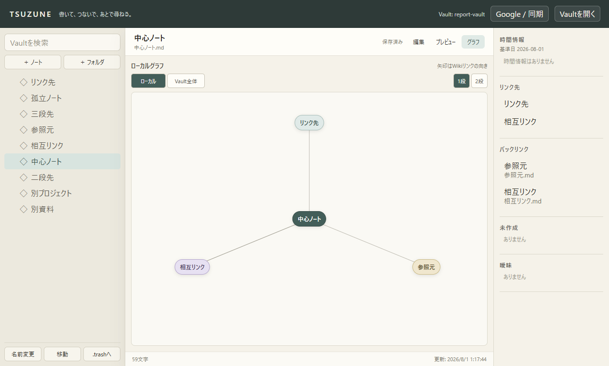
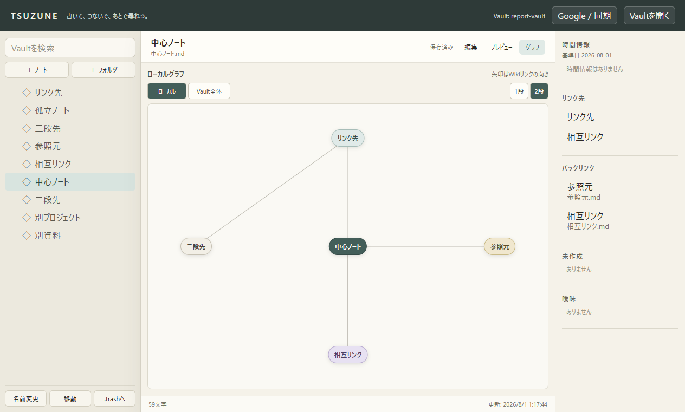
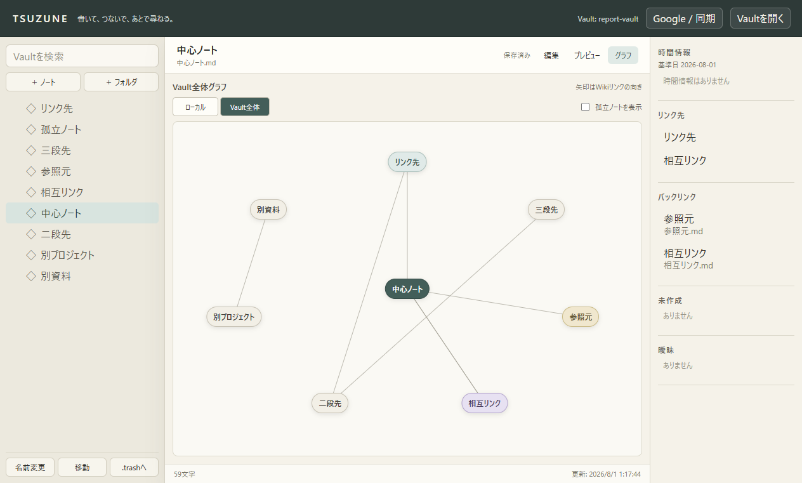
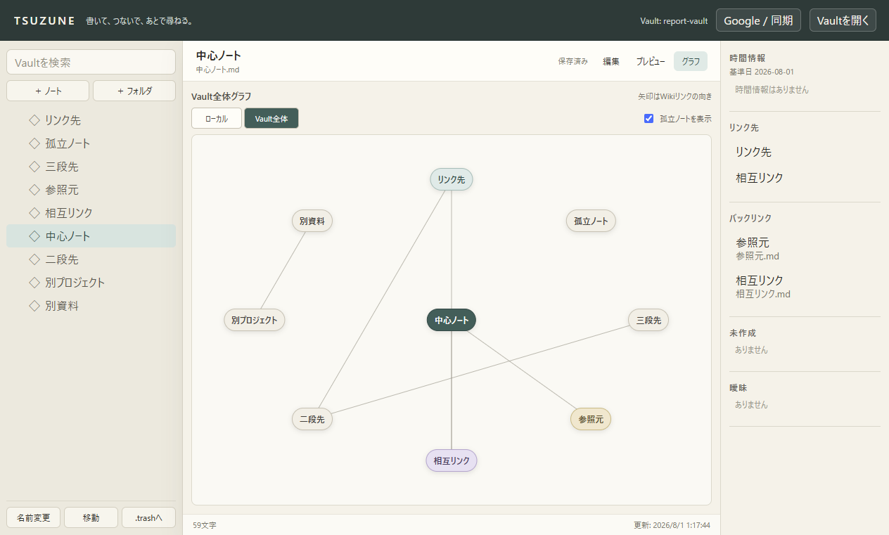

1. ローカルグラフ・深度1
現在ノートと直接つながるリンク先・バックリンク・相互リンクだけを表示する既定状態です。

TSUZUNEのローカルグラフとVault全体グラフを行き来し、孤立ノートを必要な時だけ確認できるようにした区切りの機能レポートです。
既定のローカル表示を維持しながら、解決済みWikiリンクに参加する全ノートへ表示範囲を広げられます。孤立ノートは既定で隠れ、チェックした時だけ追加されます。切替は表示だけに作用し、Markdown本文や選択ノートを変更しません。
現在ノートと直接つながるリンク先・バックリンク・相互リンクだけを表示する既定状態です。

深度2へ切り替えると二段先だけが追加され、三段先までは広がりません。

現在ノートと無関係な別コンポーネントも含め、解決済みリンクに参加するノートをVault全体から表示します。

「孤立ノートを表示」を選択すると、次数0のノートが追加されます。

| 検証 | 結果 |
|---|---|
npm run typecheck | PASS |
npm test | 24 files / 191 tests |
npm run check:mcp | 4 read / 2 write |
npm run build | PASS |
git diff --check | PASS |
webContents.capturePage()で取得。次はノート名・パスの絞り込み、ズーム、パン、全体表示です。Vault全体は現時点で固定配置かつ件数無制限なので、P0-3では表示上限と省略通知を先に固定してから操作を追加します。P0-4のStarter Vault dogfoodまでは、大規模Vault対応完了とは扱いません。